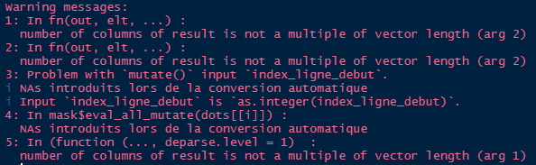

vignettes/aspe_01_importation_tables.Rmd
aspe_01_importation_tables.RmdImporter les tables de la base ASPE sous la forme de
dataframes à partir d’un dump, sauvegarde de
la base qui est réalisée chaque nuit au BRGM qui héberge la base de
production.
Ce tutoriel est utile uniquement si vous avez besoin d’une partie de la base qui excède le service offert par l’API sur Hub’eau et que vous n’avez pas accès aux fichiers
.RDatadéjà parsés.
L’API Hub’eau ‘poissons’ est requêtable au moyen du package R hubeau.
De manière générale il est recommandé de travailler sous la forme de “projets R”. L’intérêt et la méthode sont développés dans les supports de formation à R produits par le MTES.
Pour cet exemple on utilisera une des arborescences classiques :
raw_data.processed_data.scripts.Pour installer le package {aspe} à partir de Github il faut une machine disposant des éléments suivants - préférentiellement à installer dans cet ordre :
{aspe}
Une fois la machine configurée, le package est téléchargeable depuis Github :
devtools::install_github("pascalirz/aspe")Eventuellement cette commande vous retournera un message demandant de
mettre à jour des packages. Acceptez au moins les mises à
jour depuis le CRAN.
On importe la totalité de la base en une fois, ce qui est bien pratique.
# chemin vers le dump
file <- "C:/Users/pascal.irz/Documents/projets/ASPE/raw_data/aspe_dump_test_pour_datapaper.sql"
# importation
imp_importer_dump_sql(fichier_dump = file)L’opération prend environ une demi-heure. L’import peut produire des
messages d’avertissement (Warning) de ce type, qui
n’indiquent pas de problème :

Quand l’importation est terminée, une centaine de
dataframe apparaissent dans l’onglet “Environnement” de
RStudio.
Pour éviter d’avoir à répéter cet import, on peut en sauvegarder le
résultat au format .RData de façon à y accéder plus
rapidement par la suite. Comme la table mesure_individuelle
pèse à elle seule la moitié du volume de la base, on choisit de la
conserver dans un fichier à part.
On peut utiliser la fonction export_tables_rdata() qui
nomme les deux fichiers en fonction des dates et heures systèmes (pour
éviter d’écraser malencontreusement d’anciens fichiers) et les
sauvegarde par défaut dans un sous-répertoire
/processed_data du répertoire de travail. Si celui-ci n’est
pas pré-existant, il est créé.
NB : La fonction
importer_dump_sql()accepte en entrée aussi bien le fichier compressé que décompressé.
La mémoire ne permettra pas de stocker simultanément le gros fichier
texte du dump et les dataframes. Il faudra
procéder en deux étapes. Une des tables, nommée
mesure_individuelle, comprend à elle seule plus de lignes
que la totalité des autres qui sont plus d’une centaine. Il s’agit de la
traiter à part.
La première étape est de scinder le dump en deux parties
qui seront stockées en format .RData :
mesure_individuelle.Ce découpage prend 5-10’.
imp_scinder_dump(fichier_dump = "raw_data/aspe_20210908.sql.gz")NB : Cette opération peut être bloquée si le chemin d’accès est trop long, ce qui retourne un message d’erreur commençant par :
Error in gzfile(file, "wb") : argument 'description' incorrect
De plus : Warning message ....
Dans ce cas, déplacez le dump pour raccourcir le chemin
d’accès.
Si ça a bien fonctionné on trouve dans le répertoire de destination
(par défaut celui où se trouve le fichier du dump) les deux
fichiers .RData.
En cas de message d’erreur comprenant
Error in gzfile(file, "wb") : ...', la cause la plus probable est un mauvais chemin vers le fichierdump, ce qui ne devrait pas arriver avec l’organisation suggérée du projet.
Ensuite, on charge le fichier .RData souhaité.
load(file = 'raw_data/lignes_autres_tables.RData')Ce qui fait apparaître dans l’environnement un objet
lignes_autres_tables.
Si l’on connaît les noms des tables dont on aura besoin, on les
charge directement au moyen de la fonction
imp_tables_a_partir_des_lignes() en renseignant l’argument
tables_a_extraire.
imp_tables_a_partir_des_lignes(lignes_dump = lignes_autres_tables,
tables_a_extraire = c("station", "facies"))Si on ne les connaît pas, on peut les afficher avec la fonction
imp_extraire_noms_tables()
imp_extraire_noms_tables(lignes_dump = lignes_autres_tables)… ou bien tout importer (environ 5’) pour effectuer le tri ultérieurement.
imp_tables_a_partir_des_lignes(lignes_dump = lignes_autres_tables)L’import peut produire des messages d’avertissement (Warning) qui sont informatifs.
Comme cet import est un peu long, il y a intérêt à en sauvegarder le
résultat, par exemple dans le répertoire
processed_data.
Cette sauvegarde est réalisée au format .RData par la
fonction exp_tables_rdata(). Comme la table
mesure_individuelle pèse à elle seule plus de la moitié de
la base, elle est sauvegardée à part, dans
mei_aaaa_mm_jj_hh_mm_ss.RData, tandis que l’ensemble des
autres tables sont regroupées
danstables_sauf_mei_aaaa_mm_jj_hh_mm_ss.RData. Par défaut
ces fichiers sont placés dans le sous-répertoire
processed_data du répertoire de travail qui est créé s’il
n’est pas pré-existant.
aspe::export_tables_rdata()Si l’on souhaite ne conserver qu’une partie des
dataframe afin d’y voir plus clair, on peut effectuer une
sélection avec la fonction keep() du package
gdata, à installer si besoin.
gdata::keep(operation,
operation_ipr,
station,
point_prelevement,
sure = TRUE)Pour ne sauvegarder que ces tables :
save(operation,
operation_ipr,
station,
point_prelevement,
file = "processed_data/tables_selectionnees.RData")Si l’on veut sauvegarder toutes les tables en csv :
export_tables_csv(repertoire = "processed_data/csv")